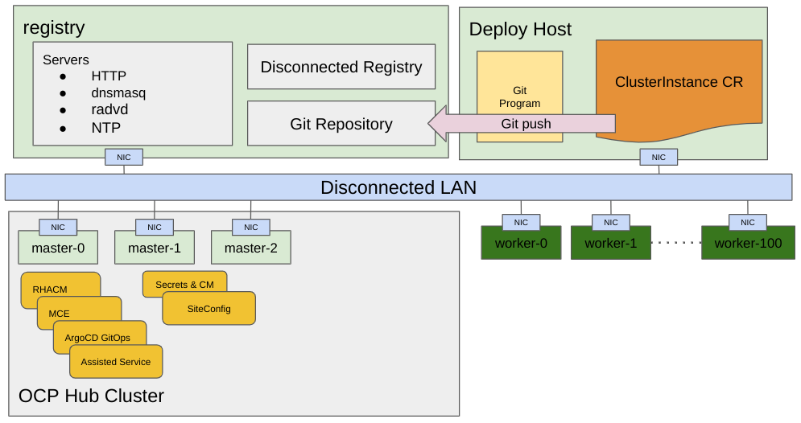
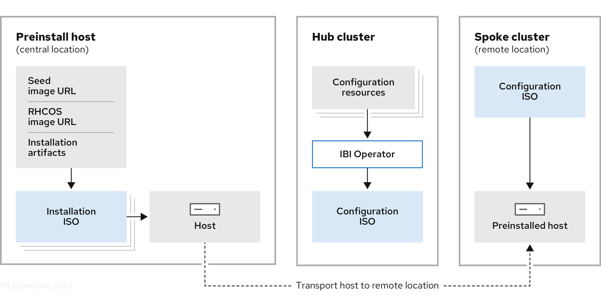
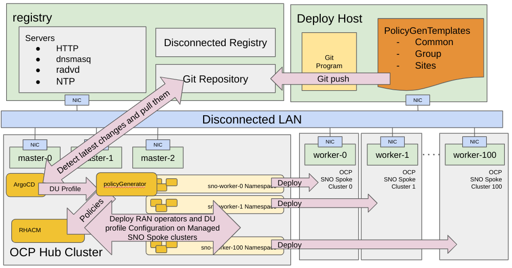

ZTP Workflow
As mentioned, Zero Touch Provisioning (ZTP) leverages multiple products or components to deploy OpenShift Container Platform clusters using a GitOps approach. While the workflow starts when the site is connected to the network and ends with the CNF workload deployed and running on the site nodes, it can be logically divided into two stages: provisioning of the SNO and applying the desired configuration, which in our case is applying the Telco RAN DU reference configuration.
| The workflow requires no manual intervention; ZTP automatically configures the SNO once it is provisioned. |
Single-Node OpenShift Deployments
Starting with OpenShift Container Platform 4.18, there are two ZTP deployment flows to provision single-node OpenShift clusters at scale.
Agent Based Installation
The Agent Based Installation flow was the only option available until the 4.18 OpenShift release. The Assisted Service is central to this deployment method.
It starts with creating declarative configurations for the provisioning of your OpenShift clusters. This manifest is defined in a custom resource called ClusterInstance. In a disconnected environment, a container registry is needed to deliver the OpenShift container images required for the installation. This can be achieved using oc-mirror (starting in OCP 4.18, oc-mirror v2 is the preferred approach). More information about disconnected environments can be found in Deployment Considerations section.
| Depending on your specific environment, you might need extra services such as DHCP, DNS, NTP, or HTTP. The latter is needed for downloading the RHCOS live ISO and the RootFS image locally instead of using the default http://mirror.openshift.com site. |
Once the configuration is created, you can push it to the Git repository where Argo CD continuously monitors for new content:

Argo CD pulls the ClusterInstance CR, which the SiteConfig Operator validates and transforms into several custom resources that are understood by the Assisted Service running on the hub cluster. A ClusterInstance contains all the necessary information to provision your node or nodes. It creates ISO images with the defined configuration that are delivered to the edge nodes to begin the installation process. These images are used to repeatedly provision large numbers of nodes efficiently and quickly, allowing you to keep up with requirements from the field for far-edge nodes.
| In telco use cases, clusters primarily run on bare-metal hosts. Therefore, the produced ISO images are mounted using remote virtual media features of the baseboard management controller (BMC). |

The resulting resources depicted in the previous image are called Installation Manifests. For this workflow, they are:
-
AgentClusterInstall
-
ClusterDeployment
-
NMStateConfig
-
KlusterletAddonConfig
-
ManagedCluster
-
InfraEnv
-
BareMetalHost
-
HostFirmwareSettings
-
ConfigMap for extra-manifest configurations
Then, they are processed by the Assisted Service, and the provisioning process starts.

The provisioning process includes installing the host operating system (RHCOS) on a blank server and deploying OpenShift Container Platform. This stage is managed mainly by the Assisted Service, which is part of the Infrastructure Operator. Detailed information about the workflow controlled by this software is available in the previous Infrastructure operator section.
| ZTP allows us to provision clusters at scale. Multiple ClusterInstance CRs can be committed to Git simultaneously or over time to deploy multiple clusters. |
Image Based Installation
This approach enables the preinstallation of configured and validated instances of single-node OpenShift on target hosts. These preinstalled hosts can be rapidly reconfigured and deployed at the far edge of the network, including in disconnected environments, with minimal intervention. The Image Based Installation flow significantly reduces the deployment time of single-node OpenShift clusters by streamlining the installation process.
| In telco environments, especially in RAN, the Image Based Installation deployment method is preferred due to the reduced installation times and the scalability requirements needed in edge deployments. Currently, only single-node OpenShift clusters can be installed using this workflow. |
To deploy a managed cluster using an image-based approach in combination with GitOps Zero Touch Provisioning (ZTP), you can use the SiteConfig Operator. Alternatively, you can manually deploy a preinstalled host for a cluster without using a hub cluster by using the openshift-install installation program. For more information, see Deploying a single-node OpenShift cluster using the openshift-install program. In this lab, we will provision a cluster with the Image Based Installation deployment method using a GitOps approach with the SiteConfig Operator.
Image Based Installation and Deployment Components
First, let’s describe the components in an image-based installation and deployment.
-
Seed image: OCI container image generated from a dedicated cluster with the target OpenShift Container Platform version.
-
Seed cluster: Dedicated single-node OpenShift cluster used to create the seed image and deployed with the target OpenShift Container Platform version.
-
Lifecycle Agent Operator: Operator deployed on the seed cluster that generates the seed image from it.
-
Image Based Install (IBI) Operator: When deploying managed clusters, the IBI Operator creates a configuration ISO from the site-specific resources you define in the hub cluster and attaches the configuration ISO to the preinstalled host using a bare-metal provisioning service.
-
openshift-installBinary: Creates the pre-installation ISO by embedding the seed image in the live installation ISO.

As shown in the previous image, the Preinstall host is installed in a central location, and then we get the host configured using the SiteConfig operator. In this lab we cover how to create the preinstall host via the openshift-install binary as well as how to configure it using the SiteConfig operator. Similar to the Agent Based Installation, the SiteConfig Operator transforms the ClusterInstance CR into the following Installation Manifests:
-
ImageClusterInstall: This is the main difference in terms of manifests between Agent Based and Image Based Installations.
-
ClusterDeployment
-
NMStateConfig
-
KlusterletAddonConfig
-
ManagedCluster
-
InfraEnv
-
BareMetalHost
-
HostFirmwareSettings
-
ConfigMap for extra-manifest configurations
Using the Lifecycle Agent, you can generate an OCI container image that encapsulates an instance of a previously installed single-node OpenShift cluster. This image is derived from a dedicated cluster that you can configure with the target OpenShift Container Platform version.
The following is a high-level overview of the image-based installation process:
-
Install a single-node OpenShift cluster with the target OpenShift version you want to install in the rest of the future clusters (this is also known as seed cluster). The seed cluster can be deployed using any supported installation method for SNO deployments. In this lab we used Assisted Installer to deploy the seed cluster.
-
Generate an image from that single-node OpenShift cluster.
-
Use the
openshift-installprogram to embed the seed image URL and other installation artifacts in a live installation ISO. -
Start the host using the live installation ISO to preinstall the host.
-
During this process, the
openshift-installprogram installs Red Hat Enterprise Linux CoreOS (RHCOS) to the disk, pulls the image you generated, and precaches release container images to the disk. -
When the preinstallation completes, the host is ready for quick reconfiguration and deployment.
-
Generate the Configuration ISO using the Image Based Install (IBI) Operator. This image contains specific information of the SNO cluster, as opposed to the generic Installation ISO.
-
Attach the Configuration ISO to the host and let the reconfiguration process finish.
Deployment Configuration
Once the clusters are provisioned, the day-2 configuration defined in one or multiple PolicyGenerator custom resources will be automatically applied. The PolicyGenerator custom resource is interpreted by the ZTP pipeline using a specific kustomize plugin called policy-generator. These templates generate Policy CRs on the hub cluster, which define the configuration to be applied to the deployed clusters. A Policy CR can be bound to multiple clusters, allowing a scalable means to define configuration across a large fleet of clusters. In RAN DU nodes, these policies configure subscriptions for day-two operators, performance tuning, and other necessary platform-level configurations.

If you want to apply a new configuration or replace an existing configuration later, you can update the PolicyGenerator in Git, which will automatically propagate to the Policy CRs on the hub cluster. After that, the user decides when those updated policies are applied using TALM.
Takeaways
In summary, the deployment of the clusters includes:
-
Leveraging a GitOps methodology for a scalable, traceable, and reliable deployment model.
-
Installing the host operating system (RHCOS) on a blank server.
-
Deploying OpenShift Container Platform.
-
Creating cluster policies via
PolicyGeneratorand site subscriptions viaClusterInstance. -
Making the necessary network configurations to the server operating system.
-
Deploying profile operators and performing any needed software-related configuration, such as performance profile, PTP, and SR-IOV.
-
Downloading images needed to run workloads (CNFs).